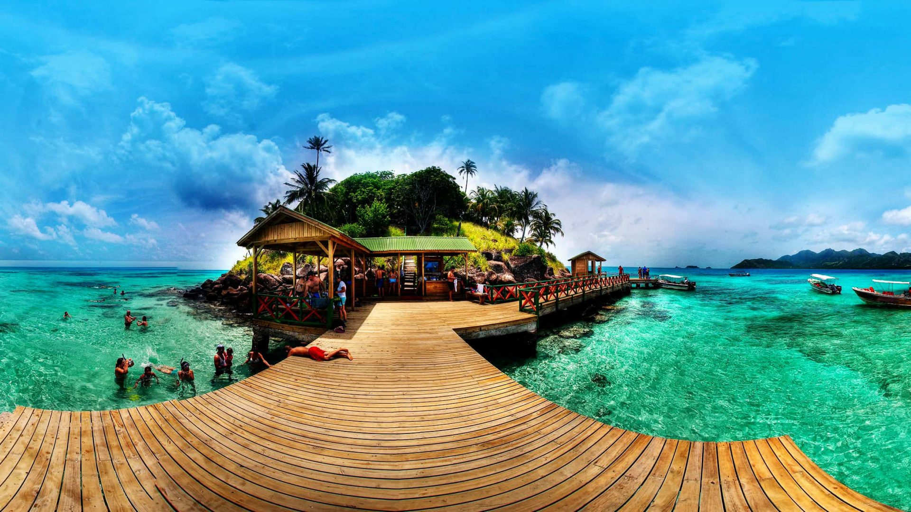

Colombia is a diverse country in South America known for its mountains, rainforests, and coasts on both the Pacific Ocean and Caribbean Sea. Historically shaped by Spanish colonization, it has a vibrant culture, coffee economy, and rich indigenous heritage.